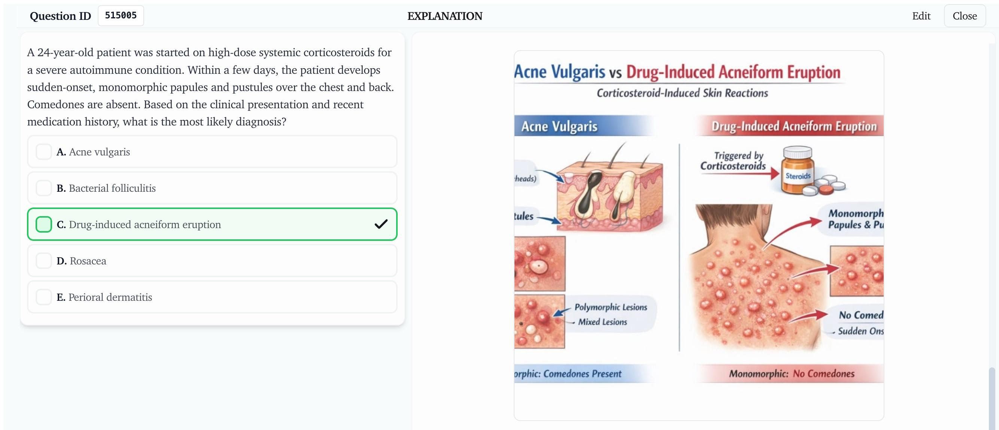

Inside The Question Bank
What to Expect from Your JCAT (MDMS) Question Bank
Our JCAT (MDMS) QBank gives you full control over what you study and how you study it. Build custom tests from 3,000+ practice questions and get comfortable with what you'll face on exam day.
Practice like it's exam day
Timed blocks that mirror the real JCAT (MDMS) screen, paired with a full walkthrough of every option — not just an answer key — so the reasoning behind each choice actually sticks.
A patient presents with pallor, fatigue, and spoon-shaped nails. Which deficiency is most likely?
- A Vitamin B12
- B IronKoilonychia and fatigue with pallor are classic for iron-deficiency anaemia.
- C Folate
Know exactly where you stand
Live analytics break your accuracy and timing down by subject, so your final weeks of prep go to the topics that will actually move your score.
Visual explanations, not walls of text
Labeled diagrams sit right inside the explanation, so complex concepts are easier to picture and easier to retain.

Built Into Every Question
Everything included, every time you practice
No add-ons, no separate purchases — every question in the JCAT (MDMS) QBank ships with the same depth of support.
Build Custom Tests
Filter by subject, difficulty, or question status to build a block that targets exactly what you need.
Bookmark & Review
Flag questions as you go and pull every flagged item into one review set before your next session.
Timed & Tutor Modes
Switch between exam-timed blocks and a relaxed tutor mode that reveals explanations as you go.
Reference-Backed Answers
Explanations are grounded in standard references, so what you're reading holds up under scrutiny.
Full Syllabus Coverage
Every subject and topic in the official syllabus is represented, so nothing catches you by surprise.
Regularly Updated Content
Refreshed each cycle to stay aligned with the current exam pattern and syllabus.
Getting Started
How it works
From sign-up to exam day.
-
01
Create your account
Pick your exam track and set up your study profile in under a minute.
-
02
Practice questions
Work through scenario MCQs at real exam difficulty with every option explained.
-
03
Read explanations
Review why each option is right or wrong until the logic sticks.
-
04
Track progress
Use dashboards to spot weak areas and measure improvement over time.
From Candidates
What JCAT (MDMS) candidates say
Rated 4.8/5 by more than 900 JCAT (MDMS) candidates for explanation quality and realism.
The scenario-heavy format matched JCAT perfectly. Felt fully prepared walking in.
Subject-wise breakdown helped me focus my last two weeks on exactly the right topics.
Clear visuals in the explanations made tough concepts click much faster.
Start Preparing
JCAT (MDMS) question bank
Full explanations for every option.
JCAT (MDMS) FAQ
Common questions
It includes 3,000+ scenario-based questions purpose-built for the MDMS entrance exam's format and difficulty level.
Both share the same explanation-first approach, but JCAT (MDMS) questions are weighted toward the entrance-exam syllabus and scenario format, while FCPS-1 questions target postgraduate-level clinical reasoning.
Yes. Alongside custom practice blocks, you can sit full-length timed mocks that mirror the real JCAT (MDMS) exam format.
Yes. Use "View sample questions" above to try a short set of JCAT (MDMS) questions before you create an account.